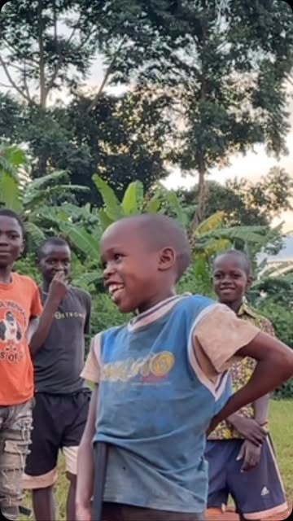
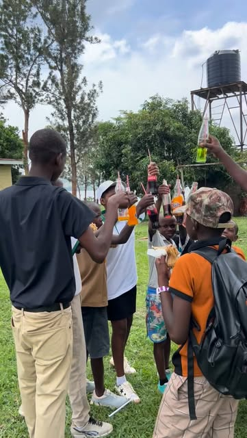

Rooted in Uganda. Looking forward.
Opportunity starts with access.
Styles Foundation Africa brings children together around golf, with education at the heart of its mission. Its public posts share the everyday work: young players practicing, learning alongside one another, and finding joy in the game.
A November training update describes time for the mental game, short game and long game—as well as connection and lunch. These moments show a community growing around much more than a scorecard.
“Let’s change the world through a swing”— Styles Foundation AfricaSee the foundation’s training update ↗